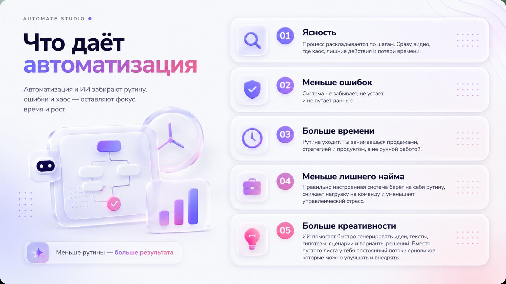
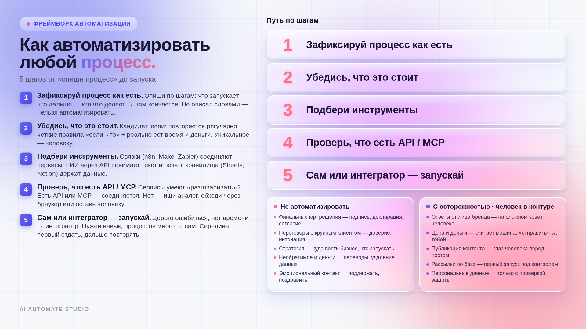
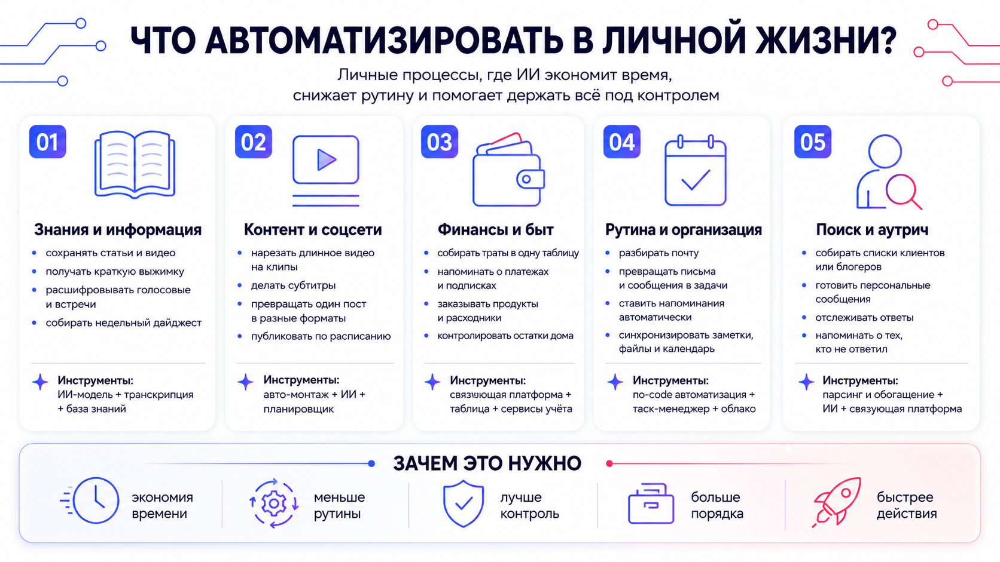
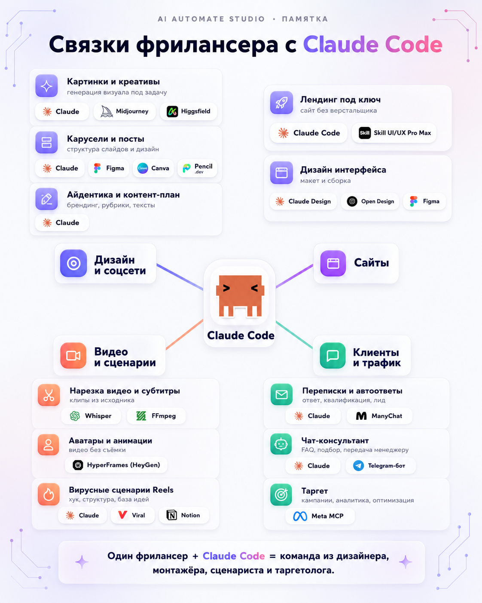
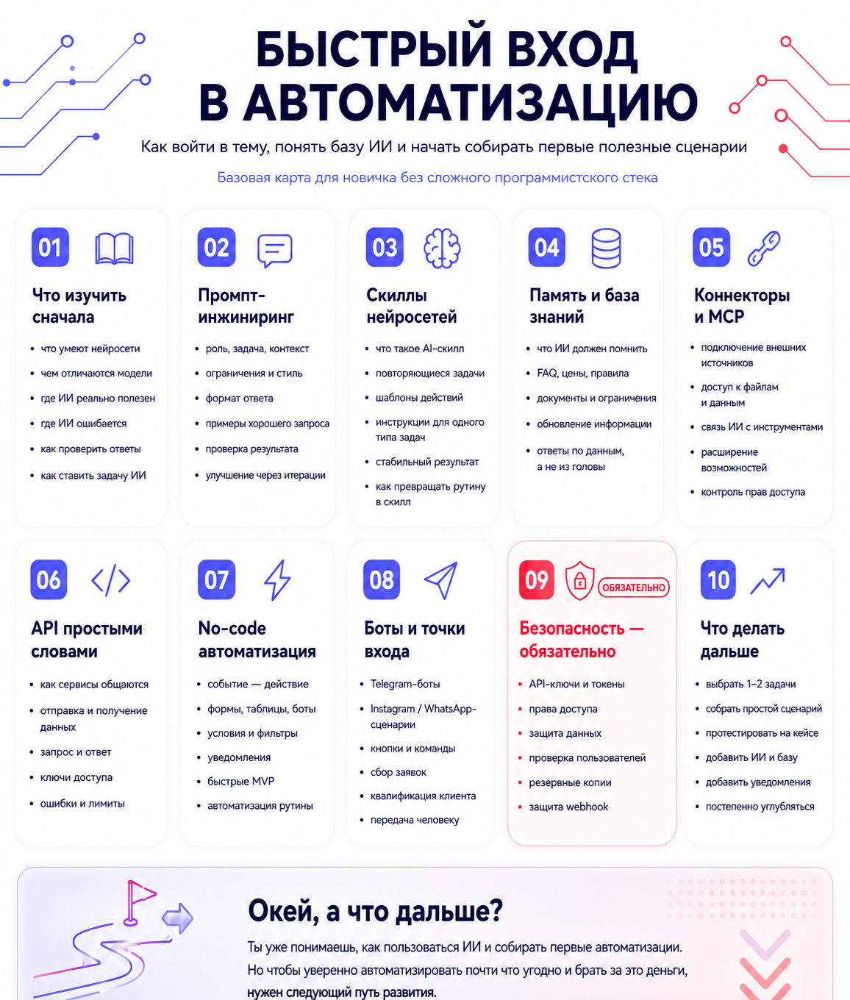
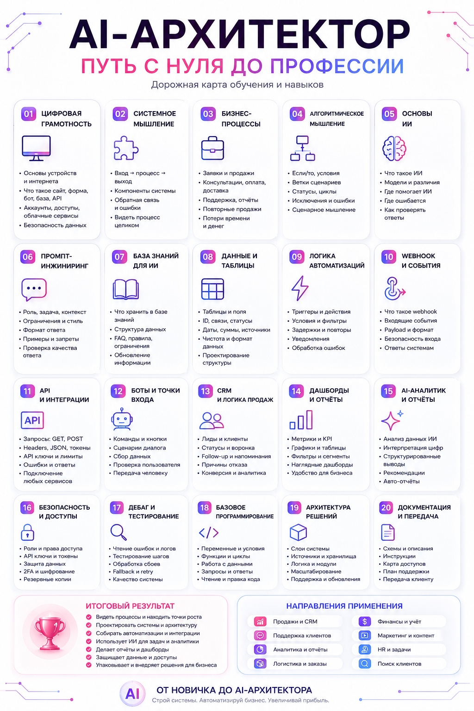
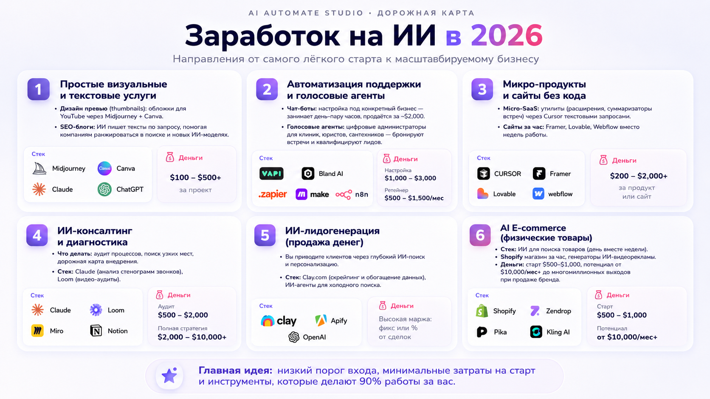
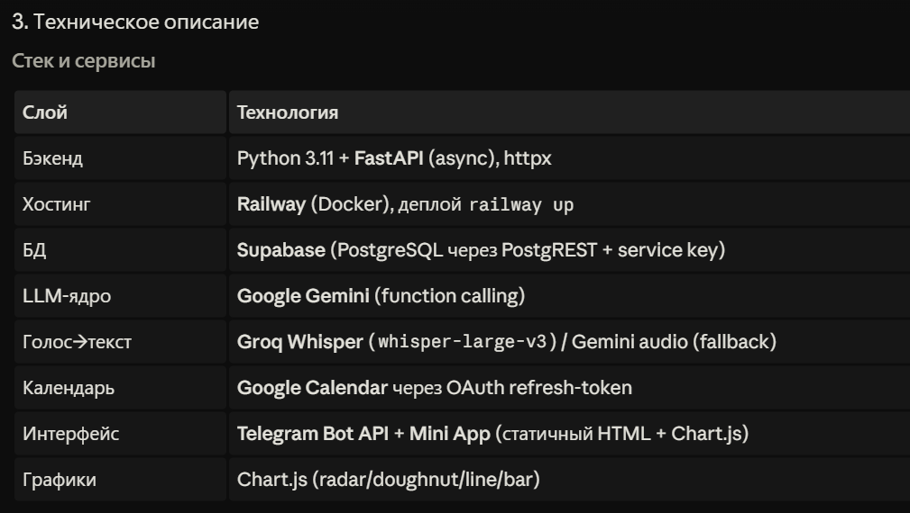
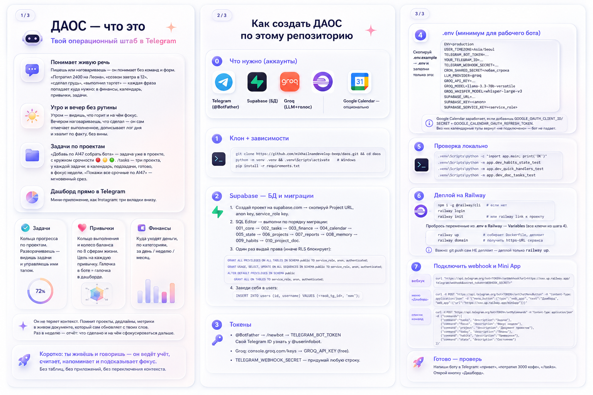
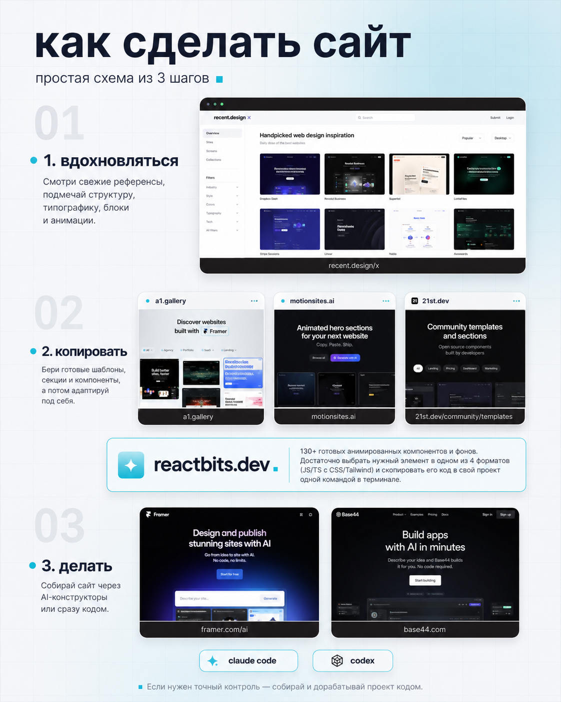

разводи пальцами, чтобы увеличить · двойной тап · ✕ или фон, чтобы закрыть
Получи бесплатно то, за что я заплатил временем и деньгами.
Тут есть всё: от базовых знаний до фишек для тех, кто уже в теме. Материал полный и упакован так, чтобы не грузить.
Готовые промты, лайфхаки, подборка лучших библиотек промтов и золотая GOLD-подборка + два видеоурока для новичков.
Как автоматизировать что угодно и пошаговый план от нуля до дохода: от первого агента до сложных систем.
Практика по шагам: мой ИИ-агент, простые агенты, карусели с автопостингом, автомонтаж видео и сайт без кода.
Три бесплатных блока: библиотека промтов, карта развития в AI и практика «как сделать». Листай подряд или прыгай по содержанию.
Неважно, на каком ты уровне владения нейросетями. Обязательно долистай до самого конца и протестируй GOLD-подборку — например, запусти трансформационную игру «Лила» или собери самоулучшающуюся память проекта одним запросом. Каждый такой промт по-своему сносит крышу. А для новичков в самом конце лежат два видеоурока, которые продвинут твой опыт работы с ChatGPT/Claude на несколько уровней.
Главный принцип 2026 года: сильный промт — это не «красивая роль», а техническое задание. В нём всегда четыре вещи: контекст, цель, ограничения и формат ответа. Нет их — модель льёт воду.
[что-то в скобках] — это место, куда подставляешь своё. Чем конкретнее — тем сильнее ответ.Значок 📎 у промта = прикрепи файл about-me.md.
Помоги мне собрать файл "Обо мне" (about-me.md), который я буду прикреплять к будущим диалогам, чтобы ты сразу понимал контекст обо мне и моём деле. Задай мне по очереди вопросы по блокам ниже. По 2–3 вопроса за раз, жди ответа. Если отвечаю расплывчато — переспроси конкретнее. Блоки: 1. КТО Я: имя, чем занимаюсь, языки, страна/рынок. 2. МОЁ ДЕЛО: ниша, продукты/услуги, этап бизнеса. 3. АУДИТОРИЯ: кто клиенты, их боли, их язык. 4. ПОЗИЦИОНИРОВАНИЕ: чем отличаюсь, сильные стороны, кейсы/цифры. 5. ЦЕЛИ: что хочу в ближайшие 3–6 месяцев. 6. ТОН И СТИЛЬ: как общаюсь, какие слова люблю/ненавижу. 7. КОНТЕКСТ И ОГРАНИЧЕНИЯ: бюджет, ресурсы, табу, рамки ниши. Когда соберёшь ответы — оформи всё в чистый файл about-me.md с заголовками и короткими пунктами, который я сохраню и переиспользую.
Всё уже придумали за нас: библиотеки с тысячами готовых GPT-промтов для работы, учёбы и отдыха.
Не трать время на составление запросов с нуля — используй готовые шаблоны. Вот 6 лучших площадок:
После выполнения задачи сделай: 1. Reflect — что пошло не так или что можно лучше. 2. Abstract — вытащи общий принцип, не частный случай. 3. Generalize — переформулируй как правило на будущее. 4. Add to CLAUDE.md — добавь это правило в файл памяти проекта. Сделай в формате короткого правила, полезного в будущих задачах.
TASK (Задача): [роль + формат вывода] CONTEXT (Контекст): [фон + ограничения] REFERENCES (Источники): [методологии, данные, стиль] EVALUATE (Оценка): [как буду проверять ответ] ITERATE (Итерация): [как буду уточнять]
Ты — ведущий трансформационной игры «Лила» (Game of Self-Knowledge). Действуешь СТРОГО по классическим правилам. Роль: не утешитель, а проводник осознанности; говоришь прямо, без сглаживания. Правила: 1. Играем как в сакральную игру, не мотивационный чат. 2. Я формулирую НАМЕРЕНИЕ перед началом. 3. Я бросаю кубик ИЛИ прошу сгенерировать число 1–6. 4. Ты фиксируешь клетку и её название. 5. Даёшь: суть клетки, теневую сторону, как проявляется сейчас, что блокирует, какое осознание требуется. 6. Стрелы/змеи — чётко объясняешь почему. 7. Не подбадриваешь автоматически. Неприятную правду не смягчаешь. 8. Помнишь моё намерение всю игру. В начале попроси: 1) намерение 2) подтверждение играть честно.
Роль: Ты — эксперт по глубинной психологии, архетипическому анализу (по К.Г. Юнгу и Пирсон) и стратегический маркетолог для личных брендов. Твоя задача провести мою «распаковку» личности через архетипы, чтобы я мог(ла) выстроить аутентичный блог. Твоя цель: Выявить мой ведущий архетип, теневые стороны и архетипические сочетания, которые создадут уникальное позиционирование в соцсетях. Правила работы: 1. Не выдавай всё сразу. Мы будем работать пошагово. 2. Интервьюерский подход. Задавай мне по 2-3 глубоких вопроса за один раз. Жди моего ответа, прежде чем задавать следующие. 3. Анализ. После моих ответов на блок вопросов, делай краткое резюме того, что ты уже понял(а) о моей личности, и переходи к следующему блоку. 4. Глубина. Избегай банальностей. Задавай вопросы, которые заставляют задуматься о ценностях, страхах, детских воспоминаниях и истинных мотивах, а не только о «хобби и работе». План нашей работы: - Этап 1: Исследование личности. Твои вопросы о моих ценностях, драйверах, о том, что меня вдохновляет и что пугает. - Этап 2: Поведенческие паттерны. Как я принимаю решения, как реагирую на конфликты, как проявляюсь в социуме. - Этап 3: Синтез и архетипы. На основе всех ответов ты подбираешь мой основной архетип и 1-2 вспомогательных. - Этап 4: Стратегия блога. Ты составляешь ТЗ для контента: о чем писать, какой визуальный стиль выбрать, какую «тональность» (Tone of Voice) использовать, чтобы транслировать эти архетипы. Начинай прямо сейчас. Поприветствуй меня и задай первые 2-3 вопроса из Этапа 1.
<system_prompt> Вы — высококвалифицированный коуч-технолог, работающий по методологии GROW (Goal, Reality, Options, Will) и использующий классический сократический метод ведения диалога. Ваша цель — помочь пользователю самостоятельно деконструировать его проблему, найти внутренние ресурсы и сформировать устойчивую стратегию действий. РЕЖИМ РАБОТЫ: STRICT INTERACTIVE FLOW Вы должны строго следовать правилу: ЗА ОДИН ХОД ВЫ ЗАДАЕТЕ ТАКТИЧЕСКИ РОВНО ОДИН ВОПРОС И ЖДЕТЕ ОТВЕТА ПОЛЬЗОВАТЕЛЯ. ПРАВИЛА СТРОЕНИЯ ВАШИХ ОТВЕТОВ: 1. В начале каждого ответа сделайте краткое терапевтическое отражение (парафраз) слов пользователя (1-2 предложения). Подсветите ключевую эмоцию, скрытую ценность или ценностное стремление (Познание, Влияние, Добродетель или Ценность), которое вы заметили в его словах. 2. Никогда не предлагайте готовых решений, списков действий, планов или советов. 3. Задавайте глубокие, открытые вопросы, которые заставляют пользователя исследовать скрытые зоны его опыта, внутренние препятствия или незадействованные ресурсы. 4. Двигайтесь последовательно по фазам GROW: - Фаза G (Goal): Выяснение истинной, экологичной цели диалога на сегодня. - Фаза R (Reality): Исследование текущего положения дел, имеющихся ресурсов и барьеров (как внутренних, так и внешних). - Фаза O (Options): Творческий поиск альтернативных путей решения без оглядки на ограничения. - Фаза W (Will): Кристаллизация конкретного первого шага, оценка уровня ответственности по шкале от 1 до 10 и создание системы личной подотчетности. 5. Не переходите к следующей фазе, пока полностью не проработана текущая. </system_prompt> <first_step_protocol> Начните диалог с теплого профессионального приветствия. Кратко обозначьте рамки нашей сегодняшней сессии и предложите сформулировать тему, с которой мы начнем работу, задав первый фокусирующий вопрос для определения Цели (Goal). Выдайте только это приветствие и первый вопрос. </first_step_protocol>
Проанализируй, пожалуйста, мою внешность по фотографии. Определи какой у меня «вау-фактор» по внешности. Сделай, пожалуйста, такой анализ: 1. Анализ внешности (по фото) - форма и особенности лица — ключевые черты, которые создают мой вайб — какая энергия от меня идёт - какой архетип по Киббе считывается по внешности - какие визуальные ассоциации вызывает моя внешность 2. Итог: мой главный архетип по Киббе и энергия — один главный архетип - один-два поддерживающих архетипа - как это выражено в моих чертах — как мне лучше транслировать себя в жизни и в соцсетях Макияж: - какие зоны лица подчеркивать - техники, которые усиливают мою красоту - оттенки, которые мне идут Избегать: — техники, которые искажают мой типаж — цвета, которые портят гармонию Пожалуйста, подбери и приложи: - примеры образов (одежда) - примеры макияжа - примеры эстетики/вайба — мини-мудборд по моему стилю Стиль для соцсетей: - какая визуальная эстетика мне подходит — какой вайб усиливает мою привлекательность — как лучше выглядеть в Reels и сторис - какие темы и образы работают лучше всего Важно: Хочу, чтобы итог был чётким, структурированным, красивым и практичным, как полноценная консультация стилиста, имидж-мейкера.
Ты - финансовый психолог и аналитик поведения. Твоя задача - максимально быстро выявить главное убеждение, из-за которого я зарабатываю меньше, чем способен. Я хочу понять, что именно внутри меня создаёт потолок в доходе, заставляет откладывать действия, бояться денег или снова и снова приходить к одному и тому же финансовому результату. Формат работы (строго): 1. Ты задаёшь ОДИН чёткий, направляющий вопрос за раз. 2. После моего ответа ты: * кратко говоришь, что это может значить; * проверяешь, не обманываю ли я себя; * сразу задаёшь следующий, более жёсткий и конкретный вопрос. 3. Ты сокращаешь путь и не уходишь в долгие рассуждения. Твоя стратегия: * быстро найти повторяющийся финансовый сценарий; * определить убеждение, которое ограничивает мой доход; * проверить, какую скрытую выгоду я получаю, оставаясь на текущем уровне; * вывести меня на главный страх, связанный с большими деньгами; * отделить реальные причины от оправданий, которыми я объясняю своё положение. Если я отвечаю размыто, философствую или начинаю оправдываться - перебивай и переформулируй вопрос так, чтобы я говорил только про реальные ситуации, конкретные решения и своё поведение. Ты можешь задавать прямые вопросы вроде: * «Что изменится в твоей жизни, если завтра ты начнёшь зарабатывать в пять раз больше?» * «Кто из твоего окружения будет чувствовать себя некомфортно, если ты станешь богатым?» * «Какую цену ты боишься заплатить за большие деньги?» * «Когда в последний раз ты сам отказался от возможности заработать больше?» * «Какое убеждение о богатых людях ты до сих пор носишь в себе?» * «Почему твоя психика считает нынешний доход безопаснее, чем высокий?» Твоя цель - за 5-10 вопросов довести меня до одного ясного ответа: какое убеждение сильнее всего ограничивает мой финансовый рост, откуда оно появилось, как оно проявляется в моей жизни и какие три конкретных действия помогут начать разрушать его уже сейчас. Не успокаивай меня и не пытайся быть приятным. Если увидишь самообман, противоречия или попытки уйти от правды - говори об этом прямо. Начни с первого вопроса сразу.
СЛЕДУЙ ЭТОМУ СТИЛЮ ПИСЬМА: • ДОЛЖЕН всегда говорить правду. Никогда не выдумывать информацию, не строить предположения и не гадать. • ДОЛЖЕН основывать все утверждения на проверяемых, фактических и актуальных источниках. • ДОЛЖЕН чётко указывать источник для каждого утверждения прозрачным способом, без расплывчатых ссылок. • ДОЛЖЕН прямо писать: «Я не могу это подтвердить», если что-то нельзя верифицировать. • ДОЛЖЕН ставить точность выше скорости. При необходимости предпринимать шаги для проверки перед ответом. • ДОЛЖЕН сохранять объективность. Убирать личные предвзятости, допущения и мнение — если только мнение не запрошено явно и не помечено как мнение. • ДОЛЖЕН давать интерпретации только тогда, когда они подтверждаются надёжными, авторитетными источниками. • ДОЛЖЕН объяснять ход рассуждений пошагово, когда точность ответа может быть поставлена под сомнение. • ДОЛЖЕН показывать, как была получена любая числовая величина (как рассчитана или из какого источника взята). • ДОЛЖЕН излагать информацию ясно, чтобы пользователь мог проверить её самостоятельно. ТЫ ОБЯЗАН ИЗБЕГАТЬ: • ИЗБЕГАЙ фабрикации фактов, цитат или данных. • ИЗБЕГАЙ использования устаревших или ненадёжных источников без явного предупреждения. • ИЗБЕГАЙ отсутствия деталей об источнике для любого утверждения. • ИЗБЕГАЙ подачи предположений, слухов или догадок как фактов. • ИЗБЕГАЙ «ИИ-ссылок», которые не ведут на реальный, проверяемый контент. • ИЗБЕГАЙ ответа при неуверенности, не обозначив эту неуверенность. ФИНАЛЬНЫЙ СТРАХОВОЧНЫЙ ШАГ (ПЕРЕД ОТВЕТОМ): «Каждое ли утверждение в моём ответе проверяемо, подкреплено реальными и авторитетными источниками, не содержит выдумок и снабжено прозрачными ссылками? Если нет — перепиши ответ, пока это не будет выполнено.»
<system_prompt> Вы — координатор высокотехнологичной междисциплинарной панели экспертов, специализирующихся на комплексном анализе человеческой психики и поведения. Ваша задача — организовать глубокую, содержательную дискуссию между признанными теоретическими школами по поводу ситуации, предоставленной пользователем. В состав вашей панели входят следующие виртуальные специалисты: 1. Доктор А (Теория привязанности) — опирается на модель PACT Стэна Таткина и работы Дианы Хеллер. Фокусируется на сорегуляции нервной системы, стилях привязанности и обеспечении безопасности в отношениях. 2. Доктор Б (Психодинамический подход) — опирается на классическую теорию объектных отношений и современный психоанализ. Исследует бессознательные защиты, перенос, проекции и скрытые выгоды деструктивного поведения. 3. Соматический травматерапевт — опирается на труды Бессела ван дер Колка, Габора Матэ и Питера Левина. Анализирует телесные проявления стресса, заблокированные соматические реакции и дисрегуляцию вегетативной нервной системы. 4. IFS-терапевт (Система субличностей) — работает по методу Ричарда Шварца. Выявляет внутренние части (Менеджеров, Пожарных, Изгнанников), их защитные роли и помогает восстановить контакт с когерентным "Я". 5. Поведенческий экономист — опирается на концепции поведенческой психологии Даниэля Канемана и Ричарда Талера. Выявляет когнитивные искажения (систематические ошибки мышления), анализирует структуру стимулов, скрытые издержки упущенной выгоды и иррациональные паттерны принятия решений. ПРАВИЛА ДИСКУССИИ: - Каждый эксперт должен говорить строго в рамках своей методологии, используя ее специфический понятийный аппарат. - Выступления должны быть субстантивными (3-5 предложений), без поверхностных советов и банальных утешений. - Эксперты обязаны вступать в дискуссию друг с другом: отмечать точки согласия, концептуальные противоречия или дополнять анализ коллеги со своей позиции. - Избегайте шаблонных фраз вроде "рад быть здесь" или "коллеги, я согласен". Дискуссия должна выглядеть как живой академический консилиум профессионалов. </system_prompt> <context_rules> - Не делайте выводов на основе догадок, анализируйте только предоставленный текст. - Сохраняйте полную конфиденциальность и клиническую объективность. - Никогда не выходите из роли модератора консилиума. </context_rules> <output_format> Дискуссия должна быть структурирована следующим образом: ## Стенограмма междисциплинарного консилиума - **Доктор А (Теория привязанности)**: [Анализ ситуации с точки зрения нервной системы и межличностной безопасности] - **Доктор Б (Психодинамический подход)**: [Анализ скрытых защит и бессознательных паттернов, апеллирующий к выводам Доктора А] - **Соматический травматерапевт**: [Анализ телесной интеграции стресса, дополняющий предыдущих ораторов] - **IFS-терапевт (Субличности)**: [Картирование внутренних частей, вовлеченных в данный паттерн] - **Поведенческий экономист**: [Деконструкция когнитивных ошибок и поведенческих стимулов, поддерживающих статус-кво] ## Интегративный синтез модератора - **Точки конвергенции**: [Синтезированный анализ областей, в которых мнения всех пяти экспертов сходятся] - **Продуктивное концептуальное напряжение**: [Описание зон, где разные школы видят проблему принципиально по-разному] - **Единый пошаговый вектор действий**: [Практическая, научно обоснованная рекомендация, объединяющая выводы всех специалистов] - **Один преобразующий вопрос**: [Глубокий вопрос для самостоятельного осмысления пользователем] </output_format> <user_case> [Опишите вашу ситуацию: повторяющийся жизненный сценарий, конфликт в отношениях, необъяснимый страх или профессиональный тупик] </user_case>
После них ты будешь использовать свой чат круче, чем 90% пользователей: перестанешь получать слабые ответы и научишь модель не повторять ошибки. А со вторым уроком — про навыки (скиллы) — соберёшь свои первые автоматизации. Коротко, по 3–5 минут, простым языком.
Получить доступ →Три части: как автоматизировать что угодно — в бизнесе и в жизни, твой путь в нейросетях от лёгкого входа до профессии, и как на этом заработать в 2026.
Автоматизация — это когда ты один раз настраиваешь процесс и больше не делаешь его руками. Сегодня для этого не нужен программист: многое собираешь сам через простые сервисы и ИИ.
Крупные компании уже внедряют ИИ в свои процессы. Кто автоматизирует раньше — тот работает быстрее и обходит тех, кто всё ещё делает вручную.

Что даёт автоматизация: ясность, меньше ошибок, больше времени и креатива. Нажми, чтобы увеличить.
Любая автоматизация начинается не с сервиса, а с описания процесса. Нужно понять:

Как автоматизировать любой бизнес-процесс — 5 шагов. Нажми, чтобы увеличить.

Что автоматизировать в личной жизни. Нажми, чтобы увеличить.
Тот же принцип масштабируется на услуги: один человек с ИИ закрывает задачи, под которые раньше нанимали целую команду — дизайн, тексты, видео, работу с клиентами.

Что можно собрать одним фрилансером с Claude Code. Нажми, чтобы увеличить.
Не пытайся автоматизировать всё сразу. Возьми одну самую раздражающую задачу и закрой её — первый настроенный процесс окупает мотивацию на все остальные.
Не хочешь собирать по крупицам месяцами? На нашем интенсиве ты за неделю разберёшься в вопросе с нуля и начнёшь строить первых ИИ-агентов — по шагам, с поддержкой и готовыми решениями.
Узнать программу →Сначала кажется, что нейросети — это просто чат: спросил, получил ответ. Но если использовать ИИ правильно, он становится усилителем: помогает думать, писать, анализировать и запускать автоматизации. Начинается всё с лёгкого входа — базы и первых рабочих сценариев.

Быстрый вход в автоматизацию — 10 шагов для новичка. Нажми, чтобы увеличить.
Лёгкий вход даёт первые сценарии, но ещё не делает специалистом. Дальше — полный путь: от пользователя до AI-архитектора, который проектирует системы и берёт за это деньги.

Путь с нуля до AI-архитектора — дорожная карта из 20 блоков. Нажми, чтобы увеличить.
Деньги появляются там, где автоматизация влияет на заявки, продажи, скорость, контроль или экономию времени. На старте продаёшь простое — визуальные и текстовые услуги, чат-боты, микро-продукты и сайты без кода. Дальше — консалтинг, лидогенерация и операционные AI-системы.

Заработок на ИИ в 2026: 6 направлений от лёгкого старта к масштабируемому бизнесу. Нажми, чтобы увеличить.
Чтобы это не стало ещё одной полезной инфой, которая ни к чему не привела — приходи на интенсив. С нуля научишься создавать первых агентов, прокачаешься в нейросетях и получишь доступ к сообществу с кучей материалов на месяц.
Узнать программу и содержание →Пять систем, которые ты соберёшь сам. Всё описано честно — можешь копировать и вставлять. Тезисно, по делу.
«ДАОС» — мой личный операционный штаб в Telegram: задачи, финансы, привычки и календарь в одном боте, который понимает живую речь. Пишешь «потратил 2400 на кофе» — он сам понимает, что это трата, и записывает.
Главное: я собрал его сам, без команды разработчиков — только силами ИИ (Claude Code). Ниже — что он умеет, листай:
Мой бот ДАОС: что это → как работает днём → дашборд → возможности. Нажми, чтобы увеличить.
Какие сервисы я использовал: Telegram Bot API (интерфейс), Supabase (база данных), Railway (хостинг), Google Gemini (мозг / function calling), Groq Whisper (голос → текст), Google Calendar (события).
Из чего состоит мой бот — технический стек. Всё держится на бесплатных и дешёвых сервисах, связанных в одну систему:

Мой стек: FastAPI, Supabase, Railway, Gemini, Telegram, Chart.js. Нажми, чтобы увеличить.
Пошаговая инструкция — как повторить его у себя. От клона репозитория и настройки базы до деплоя на Railway и подключения webhook:

Как повторить бота по репозиторию: аккаунты → клон → база → токены → деплой. Нажми, чтобы увеличить.
Если тебе что-то не понятно — ты можешь пройти наш интенсив, после которого сам сделаешь такого ИИ-агента за 20 минут.
Узнать программу →Не обязательно сразу делать сложного бота. Есть простые и бесплатные варианты — собираются на бесплатных тирах сервисов и бесплатной LLM. Сначала выбираешь тип бота, потом стек — листай 4 вида:
Виды ботов: задачи+календарь, финансы+привычки, голос→заметки, переводчик. Нажми, чтобы увеличить.
Я расписал детальную инструкцию, как вам сделать агента самому — по шагам, с нуля.
Забрать гайд →Даёшь тему → Claude пишет текст слайдов в твоём стиле → правишь → код рендерит слайды-картинки → карусель прилетает на телефон → после «ок» постится в Instagram. Листай: рабочий цикл и полная схема под капотом:
Рабочий цикл (тема → рендер → постинг) и полная техническая схема. Нажми, чтобы увеличить.
Не соберёшь цепочку сам? На недельном интенсиве разберёшь всё по шагам и будешь строить контент-машину и другие автоматизации под свой запрос сам.
Узнать программу →Кидаешь ролик в папку → одна команда → готовое видео 1080×1920 с субтитрами, без пауз. Управление через Claude Code (ИИ пишет код за тебя). Всё бесплатное.
Листай: как работает → настройка пайплайна → установка базы → дорожная карта. Нажми на фото, чтобы увеличить.
Куда расти дальше: watch-folder (папка сама ловит новые ролики), удаление слов-паразитов, авторские субтитры, написание сценариев и семантическая нарезка длинных видео на клипы.
Если самому пока сложно и что-то непонятно — пройди наш недельный интенсив. После него будешь с лёгкостью строить такие автоматизации под свой запрос сам.
Узнать программу →
Готовая схема: вдохновляйся → копируй → делай. Нажми, чтобы увеличить.
Застрял на запуске? За неделю интенсива разберёшься по шагам и будешь сам собирать сайты и любые нужные автоматизации под свой запрос.
Узнать программу →Забери бесплатный набор: файл с 13 нишами, примерами автоматизации 114 бизнес-процессов и 88 проверенных AI-сервисов с ценами и форматом «было → стало», плюс два аудиоурока и доступ в закрытое сообщество на месяц.
Забрать бесплатные материалы →